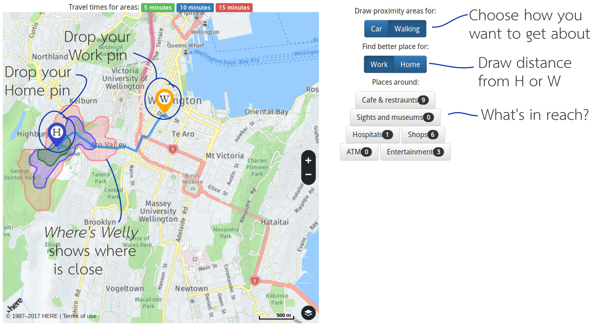
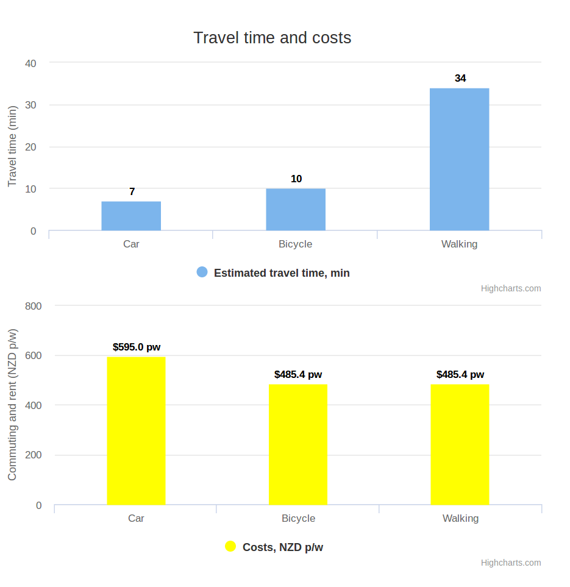

Understanding where in the Well you are.
Understanding where in the Well you are.
Wellington is famous for its hills. What is less famous is the impact those hills have on how long it takes to get from one place to another. Where’s Welly answers that question.
Using the tool you can pick a spot on the map and see everywhere you can get to within 15 minutes. You can choose walking or driving and see what else is available in that area. You can also check out how expensive it will be to live somewhere and regularly commute to somewhere else.
Pick a starting point, see where you can go
To use the map, click once to drop a (H) pin for home and a (W) pin for work.

If you want, drag either pin to a new location.
You can switch whether H or W is the center of the distance calculations.
How expensive is that?
The tool takes average rental of an area and average commute costs between H and W so you can check out where might be a good deal for you.
